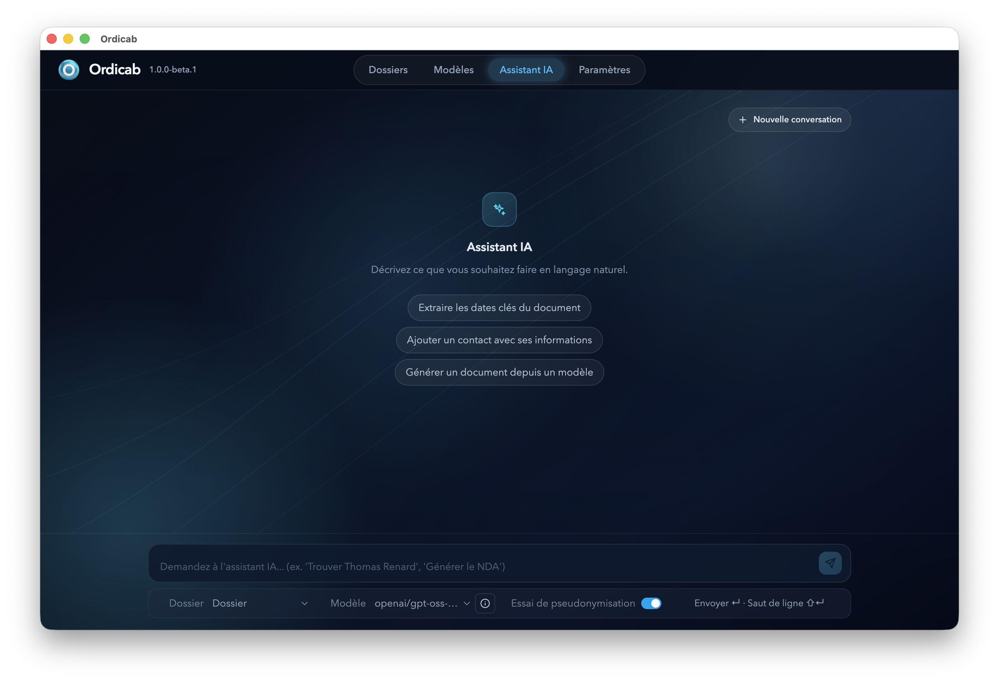

L’outil de pilotage de vos dossiers.
Avec vos assistants IA à vos côtés.

Fonctionnalités
Ordicab est en version bêta. Les briques fondamentales sont là : gestion des dossiers, des documents et des contacts, réunies dans une seule application.
Créez et suivez vos affaires en quelques clics : statut, dates importantes, références — tout est centralisé et facile à retrouver.
Consultez vos PDF, courriers et pièces jointes directement dans l'application. Plus besoin d'ouvrir plusieurs logiciels — tout est lisible au même endroit.
Préparez vos courriers types une seule fois, puis générez des documents pré-remplis automatiquement avec les informations du dossier. Un clic suffit.
Retrouvez instantanément les coordonnées de vos clients, confrères et intervenants. Chaque contact est rattaché à ses dossiers — plus rien ne se perd.
Simple dès le départ
Pas de base de données compliquée, pas de serveur à gérer. Ordicab stocke tout dans un simple dossier sur votre ordinateur que vous pouvez placer où vous voulez, y compris dans votre drive habituel.
Aucun serveur tiers ne stocke vos données. Vous restez propriétaire de vos fichiers à tout moment.
Utilisez iCloud, OneDrive, Google Drive ou Dropbox comme d'habitude : vos données se synchronisent toutes seules.
Travaillez depuis votre Mac au cabinet et votre PC à la maison : tout est à jour, sans rien à configurer.
En déplacement ou en audience — accédez à vos dossiers même sans connexion. Tout est disponible hors-ligne.
Ordicab propose quatre approches d'intégration IA pour traiter vos dossiers. Choisissez le mode qui convient à vos exigences de sécurité et de capacités.
En savoir plus sur GitHubIntégration avec des assistants IA distants. Vos fichiers sont organisés de manière optimale pour les agents IA, avec un système d'inbox intelligent et des intents qui renforcent la robustesse des tâches.
Déployez un assistant IA directement sur votre machine via Ollama. Vos données restent locales et complètement sécurisées. Le fonctionnement dépend de votre hardware disponible.
Intégration standard avec des APIs IA. Protection automatique des données personnelles sensibles par pseudonymisation. Le modèle opère exclusivement dans le contexte de votre application.
Solution innovante : exportez un dossier pseudonymisé (et non anonymisé pour une meilleure efficacité) pour traitement par les meilleurs modèles IA. Réimportez ensuite le travail complété avec décodage automatique des données.
Installation en 2 minutes. Créez votre premier dossier dans la foulée.